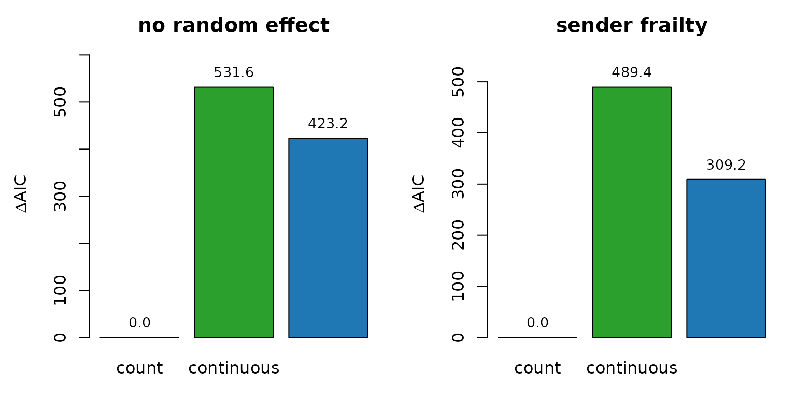
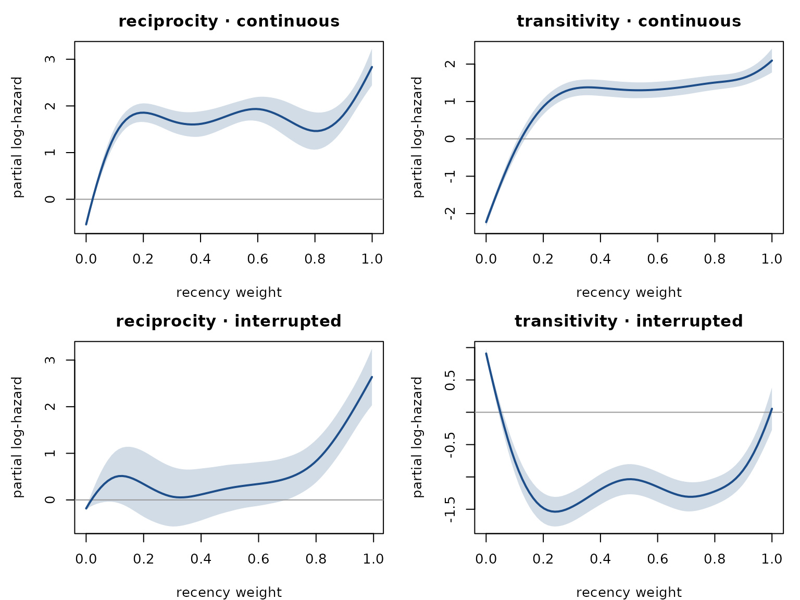

Analyses of bundled event logs
Source:vignettes/articles/bundled-log-analyses.Rmd
bundled-log-analyses.RmdAnalyses of bundled event logs
Three analyses on the bundled datasets. The code below runs when this page is built, so every table, figure and number in the text comes from the current version of the package.
Classroom · timing variants with and without a sender frailty
Juozaitienė & Wit (2024) compare count statistics with
timing variants (time since the most recent reciprocating or
transitive event, continuous or interrupted by a closing event). Count
statistics also carry sender activity: an actor who sends a lot
accumulates large counts. A Gamma sender frailty
(random_effects = "sender") absorbs activity differences
between senders.
data(classroom_events)
specs <- list(
count = c("reciprocity_count", "transitivity_count"),
continuous = c("reciprocity_time_recent", "transitivity_time_recent"),
interrupted = c("reciprocity_time_recent_interrupted",
"transitivity_time_recent_interrupted"))
no_re <- compare_models(classroom_events, specs, n_controls = 3, seed = 11)
no_re
#> model n_terms n_obs log_lik AIC delta_AIC
#> 1 count 2 691 -653.3589 1310.718 0.0000
#> 2 interrupted 2 691 -864.9598 1733.920 423.2017
#> 3 continuous 2 691 -919.1762 1842.352 531.6345
with_re <- compare_models(classroom_events, specs, n_controls = 3, seed = 11,
random_effects = "sender")
with_re
#> model n_terms n_obs log_lik AIC delta_AIC
#> 1 count 2 691 -525.3774 1092.430 0.0000
#> 2 interrupted 2 691 -679.7356 1401.603 309.1735
#> 3 continuous 2 691 -769.7646 1581.834 489.4043
cols <- c(count = "#d62728", continuous = "#2ca02c", interrupted = "#1f77b4")
op <- par(mfrow = c(1, 2), mar = c(4, 4.5, 2.5, 1))
for (tab in list(no_re, with_re)) {
d <- setNames(tab$delta_AIC, tab$model)[names(specs)]
bp <- barplot(d, col = cols[names(d)], ylim = c(0, max(d) * 1.15),
ylab = expression(Delta * "AIC"),
main = if (identical(tab, no_re)) "no random effect" else "sender frailty")
text(bp, d, sprintf("%.1f", d), pos = 3, cex = 0.85)
}
par(op)Without a random effect the count specification has the lowest AIC, ahead of interrupted by 423.2. With the sender frailty the count specification still has the lowest AIC, and its lead over interrupted is 309.2. Among the timing variants, interrupted fits better than continuous by 180.2 AIC points once the frailty is in the model.
Manufacturing · smooth effect curves
A stratified Cox model with pspline(stat, df = 4) on
four endogenous statistics, fitted on the first 30 days of the
radoslaw_email dataset with three controls per case.
Statistics are computed with the default
endogenous_features() behaviour on case-control data: the
controls are scored against the history of observed events without
entering it. Each time gap is mapped to a recency weight with
transform_recency() (1 for an event that just happened,
falling towards 0 as the gap grows), and a dyad with no such event gets
weight 0.
data(radoslaw_email)
re30 <- radoslaw_email[radoslaw_email$time < 30, ]
re30 <- re30[re30$sender != re30$receiver, ]
stat_names <- c("reciprocity_time_recent",
"transitivity_time_recent",
"reciprocity_time_recent_interrupted",
"transitivity_time_recent_interrupted")
cc <- sample_non_events(re30, n_controls = 3, seed = 11)
feat <- endogenous_features(cc, stats = stat_names)
for (s in stat_names) {
w <- transform_recency(feat[[s]])
w[is.na(w)] <- 0 # no such event yet: weight 0
feat[[s]] <- w
}
library(survival) # coxph() recognises pspline() and strata() only unqualified
fit <- coxph(
Surv(rep(1, nrow(feat)), event) ~
pspline(reciprocity_time_recent, df = 4) +
pspline(transitivity_time_recent, df = 4) +
pspline(reciprocity_time_recent_interrupted, df = 4) +
pspline(transitivity_time_recent_interrupted, df = 4) +
strata(stratum),
data = feat, method = "breslow")
c(events = nrow(re30), actors = length(unique(c(re30$sender, re30$receiver))))
#> events actors
#> 10776 151
panel <- c("reciprocity · continuous", "transitivity · continuous",
"reciprocity · interrupted", "transitivity · interrupted")
op <- par(mfrow = c(2, 2), mar = c(4, 4.5, 2.5, 1))
for (j in seq_along(stat_names)) {
s <- stat_names[j]
rng <- stats::quantile(feat[[s]], c(0.02, 0.98))
nd <- feat[rep(1, 80), ]
for (o in stat_names) nd[[o]] <- stats::median(feat[[o]])
nd[[s]] <- seq(rng[1], rng[2], length.out = 80)
pr <- stats::predict(fit, newdata = nd, type = "terms", se.fit = TRUE)
k <- grep(s, colnames(pr$fit), fixed = TRUE)[1]
y <- pr$fit[, k]; se <- pr$se.fit[, k]
plot(nd[[s]], y, type = "n", ylim = range(y - 2 * se, y + 2 * se),
xlab = "recency weight", ylab = "partial log-hazard", main = panel[j])
polygon(c(nd[[s]], rev(nd[[s]])), c(y + 2 * se, rev(y - 2 * se)),
col = grDevices::adjustcolor("#1d4e89", 0.2), border = NA)
abline(h = 0, col = "grey60")
lines(nd[[s]], y, lwd = 2, col = "#1d4e89")
}
par(op)Each panel shows one statistic’s contribution to the log-hazard, with the other three held at their medians; the band is ±2 standard errors. In this fit the two continuous variants rise steeply from weight 0 (no reciprocating or transitive event yet) and stay high, peaking for the most recent events. The interrupted reciprocity curve stays near zero until large weights and then rises; the interrupted transitivity curve is highest at weight 0 and below zero for most of the range.
CollegeMsg · first 30 days
The same three specifications on the first 30 days of
college_msg, with one control per case:
data(college_msg)
cm30 <- college_msg[college_msg$time < 30, ]
c(messages = nrow(cm30), users = length(unique(c(cm30$sender, cm30$receiver))))
#> messages users
#> 22265 1086
cm <- compare_models(cm30, specs, n_controls = 1, seed = 11)
cm
#> model n_terms n_obs log_lik AIC delta_AIC
#> 1 count 2 22265 -6782.367 13568.73 0.00
#> 2 continuous 2 22265 -13853.169 27710.34 14141.60
#> 3 interrupted 2 22265 -14716.110 29436.22 15867.48The count specification leads by 14,142 AIC points. The datasets article shows the activity heterogeneity of this network (see the actor-degree panel on the Datasets page); without a sender frailty the count statistics carry that heterogeneity, so this table ranks the specifications on activity as much as on dynamics.